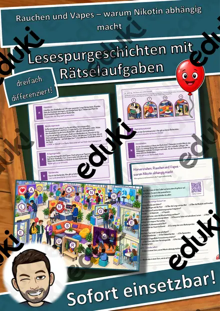
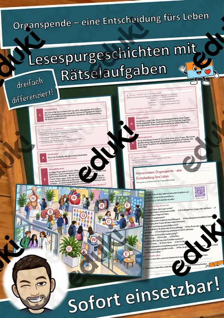
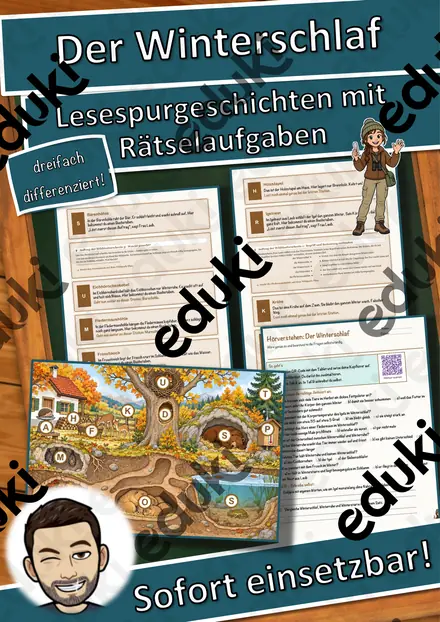
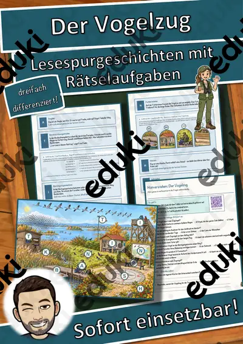
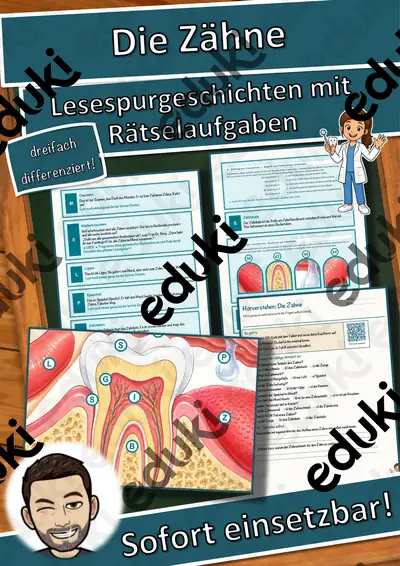
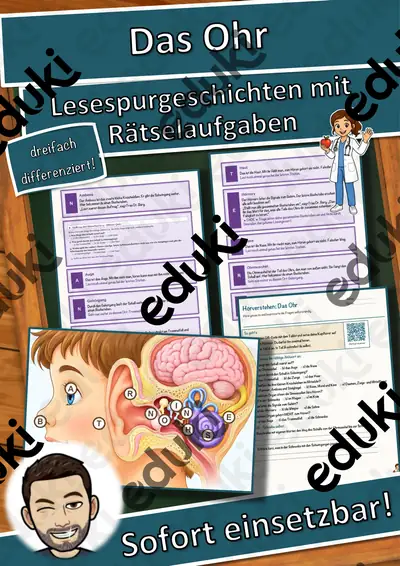
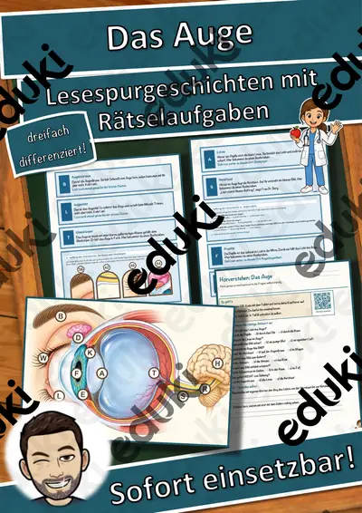

Die Muskeln – Lesespurgeschichte mit Rätselaufgaben (Klasse 7)
Begib dich mit deiner Klasse auf eine spannende Lesespur durch den Körper! Die Kinder erforschen mit der Ärztin Frau Dr. Berg die Muskeln des Menschen – von der winzigen Muskelfaser über Bizeps und Trizeps, Brust-, Bauch-, Oberschenkel- und Wadenmuskel bis zum Herzmuskel. Sie verstehen ganz nebenbei, wie Muskeln arbeiten, warum sie immer als Gegenspieler zusammenwirken und wie sie über Sehnen an den Knochen ziehen. Am Ende jedes Abschnitts verrät ein Hinweis den nächsten Ort (einen Muskel) auf dem Muskel-Plan – nur wer richtig liest und mitdenkt, findet den Weg und sammelt alle geheimen Buchstaben zum Lösungswort.
Diese Lesespurgeschichte verbindet motivierendes, sinnentnehmendes Lesen mit echtem biologischem Wissen über den menschlichen Körper und schult zugleich das genaue Arbeiten. Das Material ist SOFORT EINSETZBAR und in DREI DIFFERENZIERUNGSSTUFEN (leicht ★ / mittel ★★ / schwer ★★★) angelegt, sodass alle Kinder einer Klasse am selben Thema arbeiten können.WICHTIG: Das komplette Material ist sowohl in FARBE als auch in SCHWARZ-WEISS enthalten – ideal zum Sparen von Druckkosten.DAS IST ENTHALTEN
- Lesespurgeschichte in 3 Niveaus (leicht, mittel, schwer)
- farbiger Muskel-Plan als Suchkarte
- Hörverstehen mit QR-Code zur MP3 (Kinder hören selbstständig mit Kopfhörern)
- vier Aufträge auf dem Weg: ein Verbinde-Rätsel, ein Muskel-Quiz, eine Rechenaufgabe und ein Steckbrief
- Rätselseite (Wörter-Suchsel + Wissensfragen)
- Ausmalbild zum Thema
- ausführliches Lösungsblatt für die Lehrkraft
- alles zusätzlich als komplette Schwarz-Weiß-VarianteSO FUNKTIONIERT DIE LESESPURDie Kinder lesen ab START, entnehmen dem Text einen Hinweis auf einen Ort (einen Muskel), suchen ihn auf dem Plan und lesen bei dieser Station weiter. An jeder richtigen Station gibt es einen Sammelbuchstaben. Eingebaute Sackgassen (Knochen, Haut, Fettgewebe, Knorpel) dienen der Selbstkontrolle und machen deutlich, dass diese Gewebe zwar zum Körper gehören, aber keine Muskeln sind. Am Ende werden die gesammelten Buchstaben umgestellt und ergeben ein geheimes Lösungswort. (Die Lösungen sind selbstverständlich nur im Lösungsblatt für die Lehrkraft enthalten.)INHALTLICHER SCHWERPUNKTBau und Arbeit der Muskeln: die Muskelfaser als Baustein, Bizeps und Trizeps als Gegenspieler, Brust-, Bauch-, Oberschenkel- und Wadenmuskel, der Herzmuskel als unwillkürlicher Muskel, das Zusammenspiel von Muskel, Sehne und Knochen sowie das Grundprinzip, dass Muskeln nur ziehen können. Das Material stellt die Zusammenhänge sachlich und faktenbasiert dar und macht den eigenen Körper anschaulich erfahrbar.ABGEDECKTER LEHRPLAN (Klasse 7)
- Biologie – Der Mensch: Bau und Funktion der Muskeln, Muskelfaser, Zusammenspiel von Muskel, Sehne und Knochen (Bewegungsapparat), Gegenspieler-Prinzip, willkürliche und unwillkürliche Muskulatur, Bezug zu Sport und Gesundheit.
- Deutsch – Lesen mit Texten und Medien umgehen: Lesestrategien anwenden, Texten gezielt Informationen entnehmen, sinnentnehmend und selektiv lesen; Selbstkontrolle und Lesemotivation durch die Lesespur; Zuhören: einem Sachhörtext konzentriert folgen und Wesentliches entnehmen (Hörverstehen mit MP3).
- Mathematik – Rechnen im Sachzusammenhang (Zahlen rund um Muskeln und Körper).
- Fächerübergreifend / Kompetenzen: naturwissenschaftliches Verständnis des eigenen Körpers, Gesundheits- und Bewegungsbewusstsein, selbstständiges Arbeiten, genaues Lesen und Prüfen, Konzentration und Ausdauer, kreatives Gestalten (Ausmalbild).
Geeignet für Freiarbeit, Stationenlernen, Vertretungsstunden, Wochenplan und Homeschooling. Klassenstufe 7 (differenziert einsetzbar auch in angrenzenden Jahrgangsstufen).
Ähnliche Materialien

Materialpaket Winter und Advent für die 7. Klasse: 10 Lesespurgeschichten mit Rätselaufgaben fächerübergreifend (Weihnachtsoratorium, Südpol, Eishockey & mehr)

Rauchen und Vapes – warum Nikotin abhängig macht – Lesespurgeschichte mit Rätselaufgaben (Klasse 7)

Organspende – eine Entscheidung fürs Leben – Lesespurgeschichte mit Rätselaufgaben (Klasse 7)

Der Winterschlaf – Lesespurgeschichte mit Rätselaufgaben (Klasse 7)

Der Vogelzug – Lesespurgeschichte mit Rätselaufgaben (Klasse 7)

Die Zähne – Lesespurgeschichte mit Rätselaufgaben (Klasse 7)

Das Ohr – Lesespurgeschichte mit Rätselaufgaben (Klasse 7)
